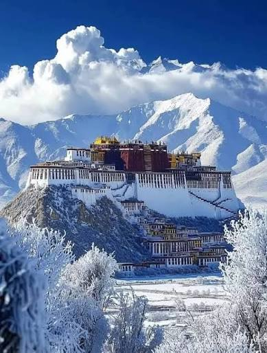
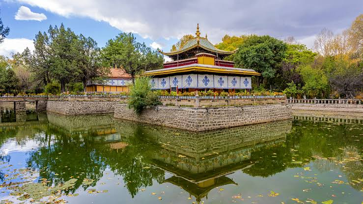

1. Potala Palace

Potala Palace is one of the most famous landmarks of Tibet. Located in Lhasa, it is known for its magnificent architecture and historical importance. The palace stands on Marpo Ri hill and is an important symbol of Tibetan culture.
2. Jokhang Temple

Jokhang Temple is a famous spiritual and cultural site in Lhasa. It is an important place of Tibetan Buddhism and attracts many visitors. The temple is surrounded by the Barkhor area, which is also known for its traditional atmosphere.
3. Yamdrok Lake

Yamdrok Lake is a beautiful turquoise lake surrounded by mountains. Its peaceful waters and breathtaking scenery make it one of the most attractive natural places in Tibet. It is admired for its natural beauty and peaceful environment.
4. Mount Everest

Mount Everest is the highest mountain in the world. Its northern side can be viewed from Tibet. The snow-covered mountains and beautiful surroundings make this a remarkable place for visitors and nature lovers.
5. Norbulingka

Norbulingka is a beautiful historic park in Lhasa. It is known for its gardens, palaces, and peaceful surroundings. The name Norbulingka means "Treasure Park," reflecting its beautiful natural and cultural features.